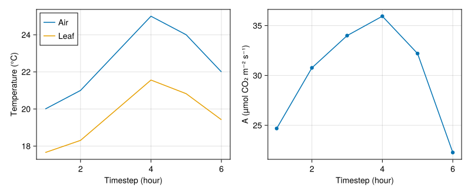

Simulation Over Several Time Steps
After the one-timestep example, let's simulate a leaf over six hours. The weather and absorbed light change each hour. We will collect one row of results per timestep and plot the leaf's response.
Prepare the input table
Weather is a sequence of Atmosphere values, one for each timestep. Here we create it from a small table; you can also import measured weather as shown on the Micro-climate page.
using PlantBiophysics, PlantSimEngine, PlantMeteo, Dates, DataFrames
forcing = DataFrame(
timestep=1:6,
T=[20.0, 21.0, 23.0, 25.0, 24.0, 22.0],
Wind=[1.0, 1.0, 1.5, 2.0, 1.5, 1.0],
Rh=[0.65, 0.62, 0.58, 0.55, 0.58, 0.63],
Ra_SW_f=[5.0, 10.0, 20.0, 25.0, 15.0, 5.0],
aPPFD=[500.0, 1000.0, 1500.0, 1800.0, 1000.0, 400.0],
)
weather = Weather([
Atmosphere(
T=row.T,
Wind=row.Wind,
P=101.3,
Rh=row.Rh,
duration=Hour(1),
)
for row in eachrow(forcing)
])
first(forcing, 3)| Row | timestep | T | Wind | Rh | Ra_SW_f | aPPFD |
|---|---|---|---|---|---|---|
| Int64 | Float64 | Float64 | Float64 | Float64 | Float64 | |
| 1 | 1 | 20.0 | 1.0 | 0.65 | 5.0 | 500.0 |
| 2 | 2 | 21.0 | 1.0 | 0.62 | 10.0 | 1000.0 |
| 3 | 3 | 23.0 | 1.5 | 0.58 | 20.0 | 1500.0 |
The values are a compact illustrative sequence, not a calibrated experiment. T, Wind, and Rh are meteorological variables, so Weather supplies the appropriate row automatically at each timestep. Absorbed shortwave radiation (Ra_SW_f) and absorbed photosynthetic photon flux (aPPFD) are externally prescribed leaf drivers in this example.
The units are °C for T, m s⁻¹ for Wind, W m⁻² of leaf for Ra_SW_f, and µmol photons m⁻² of leaf s⁻¹ for aPPFD. Rh is a fraction, not a percentage.
Assemble the leaf model
scene = leaf_scene(
Monteith(),
Fvcb(),
Medlyn(0.03, 12.0);
status=Status(
Ra_SW_f=forcing.Ra_SW_f[1],
sky_fraction=1.0,
aPPFD=forcing.aPPFD[1],
d=0.03,
),
environment=weather,
)
leaf = only(model_objects(scene; scale=:Leaf))
nothingThe leaf starts with the first row's absorbed light. Unlike Weather, a vector stored in Status does not automatically advance through time. To change a leaf input, we update its value before running the next step.
Run and retain the results
run! runs the first row of Weather. Each call to step! then advances to the next weather row and adds its results to the same simulation.
simulation = run!(scene; outputs=:all)
for timestep in 2:nrow(forcing)
leaf.status.Ra_SW_f = forcing.Ra_SW_f[timestep]
leaf.status.aPPFD = forcing.aPPFD[timestep]
step!(simulation)
end
current_step(simulation)6outputs=:all saves the calculated values at every step; the default outputs=:none only leaves the latest values on the leaf. If the leaf inputs are constant and only the weather changes, the loop can be replaced by a single run!(scene; steps=length(weather), outputs=:all) call.
The latest state is always available directly on the leaf:
(Tₗ=leaf.status.Tₗ, A=leaf.status.A, Gₛ=leaf.status.Gₛ, λE=leaf.status.λE)(Tₗ = 19.419278291852414, A = 22.273120362865413, Gₛ = 1.0374123905891801, λE = 147.72506919920286)Match outputs to input timesteps
collect_outputs returns one row per variable and timestep. unstack turns the variables into columns, then leftjoin puts the inputs and results in the same table. We use timestep to match each result to its input row:
rows = DataFrame(collect_outputs(simulation; sink=nothing))
leaf_rows = subset(
rows,
:application_id => ByRow(==(:energy_balance)),
:variable => ByRow(in((:Tₗ, :A, :Gₛ, :λE))),
)
outputs_wide = unstack(
select(leaf_rows, :timestep, :variable, :value),
:timestep,
:variable,
:value,
)
results = leftjoin(forcing, outputs_wide; on=:timestep)
select(results, :timestep, :T, :Ra_SW_f, :aPPFD, :Tₗ, :A, :Gₛ, :λE)| Row | timestep | T | Ra_SW_f | aPPFD | Tₗ | A | Gₛ | λE |
|---|---|---|---|---|---|---|---|---|
| Int64 | Float64 | Float64 | Float64 | Float64? | Float64? | Float64? | Float64? | |
| 1 | 1 | 20.0 | 5.0 | 500.0 | 17.6535 | 24.684 | 1.24914 | 134.468 |
| 2 | 2 | 21.0 | 10.0 | 1000.0 | 18.3075 | 30.7626 | 1.5022 | 159.113 |
| 3 | 3 | 23.0 | 20.0 | 1500.0 | 19.9318 | 33.9959 | 1.48721 | 219.275 |
| 4 | 4 | 25.0 | 25.0 | 1800.0 | 21.5591 | 35.9401 | 1.44051 | 275.961 |
| 5 | 5 | 24.0 | 15.0 | 1000.0 | 20.8233 | 32.198 | 1.37468 | 221.453 |
| 6 | 6 | 22.0 | 5.0 | 400.0 | 19.4193 | 22.2731 | 1.03741 | 147.725 |
The long-form representation also records the publishing application and object. Filter by application_id before reshaping whenever several applications may publish variables with the same name.
Plot the leaf response
The first panel compares leaf and air temperature. The second shows how net assimilation changes with the supplied weather and light. This is a response to the illustrative six-hour sequence above, not a measured daily cycle.
using CairoMakie
figure = Figure(size=(800, 330))
temperature_axis = Axis(figure[1, 1]; xlabel="Timestep (hour)", ylabel="Temperature (°C)")
lines!(temperature_axis, results.timestep, results.T; label="Air")
lines!(temperature_axis, results.timestep, Float64.(results.Tₗ); label="Leaf")
axislegend(temperature_axis; position=:lt)
assimilation_axis = Axis(figure[1, 2]; xlabel="Timestep (hour)", ylabel="A (µmol CO₂ m⁻² s⁻¹)")
scatterlines!(assimilation_axis, results.timestep, Float64.(results.A))
figure
Continue with Several objects to compare leaves receiving different amounts of light.